What is Searchkit?
const searchkit = new SearchkitManager("http://demo.searchkit.co/api/movies/")
const App = ()=> (
<SearchkitProvider searchkit={searchkit}>
<Layout>
<TopBar>
<SearchBox
autofocus={true}
searchOnChange={true}
prefixQueryFields={["actors^1","type^2","languages","title^10"]}/>
</TopBar>
<LayoutBody>
<SideBar>
<HierarchicalMenuFilter
fields={["type.raw", "genres.raw"]}
title="Categories"
id="categories"/>
<RefinementListFilter
id="actors"
title="Actors"
field="actors.raw"
operator="AND"
size={10}/>
</SideBar>
<LayoutResults>
<ActionBar>
<ActionBarRow>
<HitsStats/>
</ActionBarRow>
<ActionBarRow>
<SelectedFilters/>
<ResetFilters/>
</ActionBarRow>
</ActionBar>
<Hits mod="sk-hits-grid" hitsPerPage={10} itemComponent={MovieHitsGridItem}
sourceFilter={["title", "poster", "imdbId"]}/>
<NoHits/>
</LayoutResults>
</LayoutBody>
</Layout>
</SearchkitProvider>
)
ReactDOM.render(<App/>, document.getElementById('root'))
Searchkit is a suite of UI components built in react. The aim is rapidly create beautiful search applications using declarative components, and without being an ElasticSearch expert.
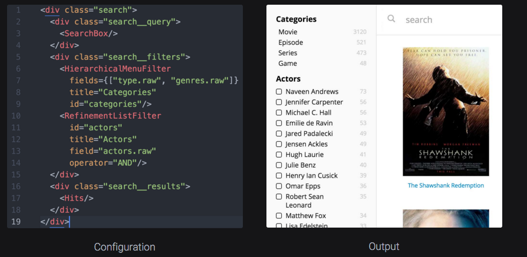
Getting Started
This section will help you setup your project for searchkit, connect and index data with elasticsearch, use and extend searchkit components to your requirements.
This guide assumes you have experience with React and JSX or TSX. Below are links on these technologies.
Project Setup
Our recommended project setup is using webpack and typescript. We also support using searchkit with ES6 / Webpack and using normal library script file. Installing via NPM is recommended.
Using Module
We recommend using webpack for module dependency management of Searchkit's src, css and static assets. requires scss, file loaders to properly resolve searchkit dependencies. See searchkit boilerplate.
Installing via NPM
Searchkit is available on npm. Searchkit is written with typescript therefore typescript definition files are available.
npm install searchkit --save
Importing with webpack / ES6
import {
SearchBox,
RefinementListFilter,
Hits,
HitsStats,
SearchkitComponent,
SelectedFilters,
MenuFilter,
HierarchicalMenuFilter,
Pagination,
ResetFilters
} from "searchkit";
Using library script
Searchkit library script is available from bower or from jsdelivr CDN.
CDN Script include
<link href="//cdn.jsdelivr.net/npm/searchkit@2.3.0-9/release/theme.css" rel="stylesheet"/>
<script src="//cdn.jsdelivr.net/npm/react@16.0.0/umd/react.production.min.js"></script>
<script src="//cdn.jsdelivr.net/npm/react-dom@16.0.0/umd/react-dom.production.min.js"></script>
<script src="//cdn.jsdelivr.net/npm/searchkit@2.3.0-9/release/bundle.js"></script>
Connecting to Elasticsearch instance
There are many ways to connect searchkit to an elasticsearch instance. We officially support ES 2.0+ but also works on 1.7.2 +. If connecting directly to elasticsearch (not using the searchkit-express), multipleSearchers cannot be true.
Using a cloud hosted elasticsearch instance
Searchkit can use a cloud based elasticsearch instance. If using in production, make sure the url is read only.
Hosting providers
Configuration
const sk = new SearchkitManager("https://kili-eu-west-1.searchly.com/movies/", {
basicAuth:"read:teetndhjnrspbzxxyfxmf5fb24suqxuj"
})
<SearchkitProvider searchkit={sk}>
...
</SearchkitProvider>
Using Local ES Server
Connecting Searchkit to your local elasticsearch instance. If you are are getting a cors related error, you will need to add the following to you `config/elasticsearch.yml' file.
http.cors.enabled : true
http.cors.allow-origin : "*"
http.cors.allow-methods : OPTIONS, HEAD, GET, POST, PUT, DELETE
http.cors.allow-headers : X-Requested-With,X-Auth-Token,Content-Type, Content-Length
Configuration
const searchkit = new SearchkitManager("http://localhost:9200/")
<SearchkitProvider searchkit={searchkit}>
...
</SearchkitProvider>
Proxy elasticsearch connection
We built a plugin for node express called searchkit-express. This proxies the search request to elasticsearch via the server. This allows to validate requests on the server and with options to apply additional filters before it reaches the elasticsearch instance. See searchkit-express setup for more information.
Configuration
const searchkit = new SearchkitManager("/")
<SearchkitProvider searchkit={searchkit}>
...
</SearchkitProvider>
Elasticsearch Indexing
The components require elasticsearch fields indexed in a particular way. For example the Hierarchical Menu needs data to be indexed in levels. See Indexing & Mapping Guide or the component's pages for more information.
Using Components
Once you have the project setup, elasticsearch correctly indexed with data, we can start by adding components to the page to interact with the elasticsearch instance. For this series of examples we are using typescript with webpack.
Adding basic components
To use searchkit, we need to instantiate a SearchkitManager with a elastic like host url as shown in connecting elasticsearch.
We then add Searchbox and hits components to the page. This should render the standard searchbox and hits to the page.
import React from "react";
import ReactDOM from "react-dom";
import {
SearchkitManager, SearchkitProvider, SearchBox, Hits
} from "searchkit";
const searchkit = new SearchkitManager("/");
ReactDOM.render((
<SearchkitProvider searchkit={searchkit}>
<div>
<SearchBox/>
<Hits/>
</div>
</SearchkitProvider>
), document.getElementById('root'))
Adding a filter based component
Each filter will require a unique id. This is used for url serialisation.
import React from "react";
import ReactDOM from "react-dom";
import {
SearchkitManager, SearchkitProvider, SearchBox, Hits, RefinementListFilter
} from "searchkit";
const searchkit = new SearchkitManager("/");
ReactDOM.render((
<SearchkitProvider searchkit={searchkit}>
<div>
<SearchBox/>
<RefinementListFilter id="actors" field="actors.raw"/>
<Hits/>
</div>
</SearchkitProvider>
), document.getElementById('root'))
Wrapping search in React component
You may want to incapsulate the searchApp within a React component. You can be using the SearchkitComponent class.
import React from "react";
import ReactDOM from "react-dom";
import {
SearchkitManager, SearchkitProvider, SearchkitComponent
} from "searchkit";
const searchkit = new SearchkitManager("/");
class SearchApp extends SearchkitComponent {
render() {
return (
<div>
<SearchBox/>
<Hits/>
</div>
)
}
}
ReactDOM.render((
<SearchkitProvider searchkit={searchkit}>
<div>
<SearchApp/>
</div>
</SearchkitProvider>
), document.getElementById('root'))
Default Queries
Sometimes we need to apply a default query which affects the entire search and is not serialized to the browser url.
SearchkitManager allows ability to add these
import {
SearchkitManager,
TermQuery,
BoolMust
} from "searchkit";
const searchkit = new SearchkitManager("/");
searchkit.addDefaultQuery((query)=> {
return query.addQuery(BoolMust([
TermQuery("colour", "red"),
TermQuery("colour", "orange")
])
);
})
ImmutableQuery + QueryBuilders
To see more detail on these apis have a look at these pages
Extending Components
Styling
Searchkit uses BEM concepts. All searchkit components allow you to change the BEM block via the mod attribute. When BEM block is overridden, no styles will be applied to the component and you can then apply your styles as required.
BEM Blocks
We use BEM-cn a BEM react library. Each component has one or more blocks (for example filters usually have 2 blocks, one for "container" and one for "option"). They will be accessible under this.bemBlocks. If you need an additional block or want to customize the block names, override the defineBEMBlocks method. Here is an example override
defineBEMBlocks() {
var blockName = "refinement-list"
return {
container: blockName,
option: `${blockName}-option`
}
}
The container block would be accessible using this.bemBlocks.container.
this.bemBlocks.container("info").state({disabled:true}) -> "refinement-list__info is-disabled"
Overriding rendering
Some components have the feature to override the display component to allow you to control the markup and contents of the component using the itemComponent props. Example of overriding the default rendering of a hit from Hits component.
import {
HitsStats,
SearchkitComponent
} from "searchkit";
const HitItem = (props) => (
<div className={props.bemBlocks.item().mix(props.bemBlocks.container("item"))}>
<img className={props.bemBlocks.item("poster")} src={props.result._source.poster}/>
<div className={props.bemBlocks.item("title")} dangerouslySetInnerHTML={{__html:_.get(props.result,"highlight.title",false) || props.result._source.title}}></div>
</div>
)
class App extends SearchkitComponent {
render(){
<div>
<SearchBox
searchOnChange={true}
queryOptions={{analyzer:"standard"}}
queryFields={["title^5", "languages", "text"]}/>
<Hits hitsPerPage={50} highlightFields={["title"]} sourceFilter={["title", "poster", "imdbId"]} itemComponent={HitItem}/>
</div>
}
}
The following components support this feature:
Components
To use searchkit, we need to instantiate a SearchkitManager with a elastic like host url.
We then wrap a searchkit app and render to the page.
import React from "react";
import ReactDOM from "react-dom";
import {
SearchkitManager, SearchkitProvider
} from "searchkit";
const searchkit = new SearchkitManager("http://localhost:9200/movies");
ReactDOM.render((
<SearchkitProvider searchkit={searchkit}>
<div>
<SearchBox/>
<Hits/>
</div>
</SearchkitProvider>
), document.getElementById('root'))
Search Box
The search box component is where your users type their search queries.
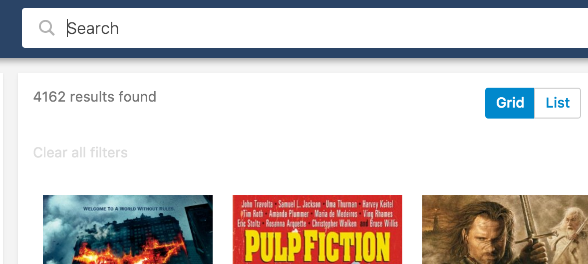
Example
import {
SearchBox,
SearchkitComponent
} from "searchkit";
class App extends SearchkitComponent {
render(){
<div>
<SearchBox
searchOnChange={true}
queryOptions={{analyzer:"standard"}}
queryFields={["title^5", "languages", "text"]}/>
</div>
}
}
Props
searchOnChange(Boolean): Optional. Updates search results as you type. Will be false by default.- use with
prefixQueryFieldsto get a better search as you type behaviour.
- use with
queryBuilder(Function) builder used to create the query going to elastic.- defaults to
SimpleQueryString - Supports
QueryString, or custom function accepting(query:string, options:Object)
- defaults to
queryFields(Array) : Optional. An array of elasticsearch fields to search within. Can specify boosting on particular fields. Will search_allby default.queryOptions(Object): Optional. An object of options for Query String.prefixQueryFields(Array) : Optional. An array of elasticsearch fields to search within. Can specify boosting on particular fields. Will search_allby default. Will only be used if searchOnChange is true.prefixQueryOptions(Object): Optional. An object of options for MultiMatchQuery .mod(string): Optional. A custom BEM container class.translations(Object): An object of translations you wish to override. For more information on translations see translate page.placeholder(string): placeholder for the input boxsearchThrottleTime(number): Default is 200ms. Is used whensearchOnChangeprop istrue. A search to elasticsearch will only be invoked once everysearchThrottleTimems.blurAction(search|restore): WhensearchOnChange={false}Configure behavior of the SearchBox when the user blur's out of the field. Defaults tosearch
Translations
searchbox.placeholder- "Search"searchbox.button- "search"
Hits
Hits component displays results from ElasticSearch. To customize each result, you need to implement a React component and pass into itemComponent prop.
The component will receive a single hit object from the search results, which will include result._source which contains the untouched stored fields which were indexed.
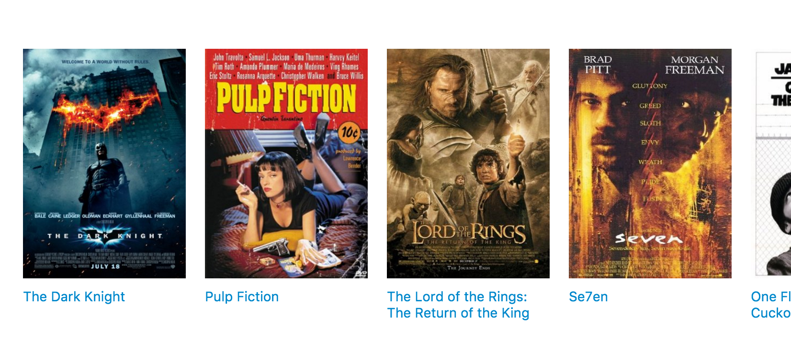
Example Usage
import { get } from "lodash";
import {
Hits,
SearchkitComponent,
HitItemProps
} from "searchkit";
const HitItem = (props) => (
<div className={props.bemBlocks.item().mix(props.bemBlocks.container("item"))}>
<img className={props.bemBlocks.item("poster")} src={props.result._source.poster}/>
<div className={props.bemBlocks.item("title")} dangerouslySetInnerHTML={{__html: get(props.result,"highlight.title",props.result._source.title)}}></div>
</div>
)
class App extends SearchkitComponent {
render(){
<div>
<Hits hitsPerPage={50} highlightFields={["title"]} sourceFilter={["title", "poster", "imdbId"]}
mod="sk-hits-grid" itemComponent={HitItem}/>
</div>
}
}
Props
hitsPerPage(Number)?: Number of results displayed per pagehighlightFields(Array) : Array of highlighted fields. Any highlight matches will be returned in the result.highlight[fieldName]. See above for example.customHighlight(Object): Optional. Allows any custom highlight behavior to control the number of fragments, fragment sizes, and highlighter. Passed through directly to elasticsearch as the value forhighlight. See the elastic documentation for further details.mod(string): Optional. A custom BEM container class.- Searchkit ships with defaults for
sk-hits-gridandsk-hits-list
- Searchkit ships with defaults for
itemComponent(ReactComponent): React component used for each hit render.listComponent(ReactComponent): React component used if you want to control the full list of results (e.g. make a table component)sourceFilter(string|boolean|Array) : A source filter parameter which is sent to elasticsearch to reduce the hit_sourcedata within the results. see the elastic documentation for further details.scrollTo(string|boolean): When results have changed, we scroll to the top of the element using the jQuery style selector passed in thescrollToprop. If true, it will use the body as the selector. Default value is true. If false, it will not scroll when new results are rendered. We determine a change by comparing hits_idfield with the new results.
Searchkit Theming styles
Searchkit ships out the box with 2 styles of search results which are controlled via the mod property
sk-hits-gridgrid stylingsk-hits-listList styling
Table List example using listComponent
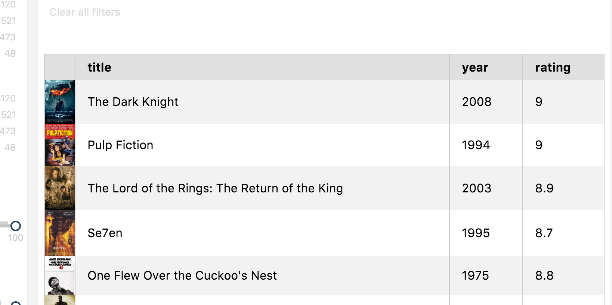
class MovieHitsTable extends React.Component {
render(){
const { hits } = this.props
return (
<div style={{width: '100%', boxSizing: 'border-box', padding: 8}}>
<table className="sk-table sk-table-striped" style={{width: '100%', boxSizing: 'border-box'}}>
<thead>
<tr>
<th></th>
<th>Title</th>
<th>Year</th>
<th>Rating</th>
</tr>
</thead>
<tbody>
{map(hits, hit => (
<tr key={hit._id}>
<td style={{margin: 0, padding: 0, width: 40}}>
<img data-qa="poster" src={hit._source.poster} style={{width: 40}}/>
</td>
<td>{hit._source.title}</td>
<td>{hit._source.year}</td>
<td>{hit._source.imdbRating}</td>
</tr>
))}
</tbody>
</table>
</div>
)
}
}
class App extends SearchkitComponent {
render(){
<div>
<Hits hitsPerPage={50} sourceFilter={["title", "poster", "imdbId", "imdbRating"]} listComponent={MovieHitsTable}/>
</div>
}
}
Demo
NoHits
NoHits component is displayed when the current query yields no results from Elasticsearch. NoHits may offer actions to help the user tweak their search to return results. NoHits will display an error when Elastic search responds with an error. You can override the display of NoHits by passing in a React Component in component or errorComponent props. See Overriding section for more details.
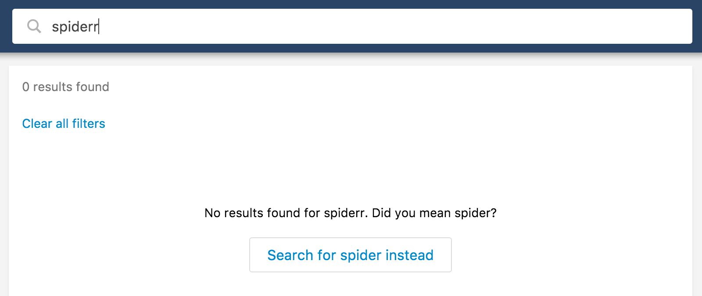
Tweaking Query Actions
If the current query and filters applied returns no results, NoHits component will try to provide steps to adjust the search.
Elasticsearch Suggestions API
If suggestionsField prop is specified, it will use elasticsearch's suggestions api and show an action to search using the suggestion if found.
Query Without Filters
NoHits will provide an action to remove the filters if the query without filters will yield results.
Example Usage
import {
Hits,
NoHits,
SearchkitProvider,
SearchkitManager
} from "searchkit"
const searchkit = new SearchkitManager(<somehost>)
const App = ()=> (
<SearchkitProvider searchkit={searchkit}>
<div>
<Hits hitsPerPage={10} sourceFilter={["title"]}/>
<NoHits translations={{
"NoHits.NoResultsFound":"No movies found were found for {query}",
"NoHits.DidYouMean":"Search for {suggestion}",
"NoHits.SearchWithoutFilters":"Search for {query} without filters"
}} suggestionsField="title"/>
</div>
</SearchkitProvider>
)
Note here we use NoHits as a sibling to
Hits
Overriding display for NoHits
If you need to override the display of No Hits, you can pass in a React component into either component or errorComponent to override the default display.
import {
Hits,
NoHits,
SearchkitProvider,
SearchkitManager
} from "searchkit"
const searchkit = new SearchkitManager(<somehost>)
const NoHitsDisplay = (props) => {
const {bemBlocks, query, suggestion, noResultsLabel} = this.props
return (
<div data-qa="no-hits" className={bemBlocks.container()}>
<div className={bemBlocks.container("info")}>
no results for {query}!
</div>
</div>
);
}
const NoHitsErrorDisplay = (props) => {
const {errorLabel, bemBlocks, resetSearchFn, tryAgainLabel} = props
return (
<div data-qa="no-hits" className={bemBlocks.container()}>
<div className={bemBlocks.container("info")}>
An error has occurred!
</div>
</div>
)
}
const App = ()=> (
<SearchkitProvider searchkit={searchkit}>
<div>
<Hits hitsPerPage={10} sourceFilter={["title"]}/>
<NoHits
component={NoHitsDisplay}
errorComponent={NoHitsErrorDisplay}
translations={{
"NoHits.NoResultsFound":"No movies found were found for {query}",
"NoHits.DidYouMean":"Search for {suggestion}",
"NoHits.SearchWithoutFilters":"Search for {query} without filters"
}} suggestionsField="title"/>
</div>
</SearchkitProvider>
)
Props
suggestionsField(ESField): The field used to create suggestions from which closely match the current query and will bring better results.translations(Object): An object of translations you wish to override. For more information on translations see translate page.component(ReactComponent): Optional. A React component which will be used to render the no hits state.errorComponent(ReactComponent): Optional. A React component which will be used to render the error state.mod(string): Optional. A custom BEM container class.
Translations
Note NoHits will interpolate the query or suggestion into your translation
NoHits.NoResultsFound: No results found for {query}.,NoHits.DidYouMean:Search for {suggestion},NoHits.SearchWithoutFilters:Search for {query} without filtersNoHits.NoResultsFoundDidYouMean:No results found for {query}. Did you mean {suggestion}?
Initial loader
Initial loader is displayed when Searchkit hasn't yet received an elasticsearch response.
Example Usage
import {
Hits,
InitialLoader,
HitItemProps
} from "searchkit";
const InitialLoaderComponent = (props) => (
<div className={props.bemBlocks.item().mix(props.bemBlocks.container("item"))}>
loading please wait...
</div>
)
class App extends SearchkitComponent {
render(){
<div>
<Hits hitsPerPage={50} highlightFields={["title"]} sourceFilter={["title"]}/>
<InitialLoader component={InitialLoaderComponent}/>
</div>
}
}
Props
mod(string): Optional. A custom BEM container class.component(ReactComponent): React component used to render the contents ofInitialLoader.
Pagination
The pagination component provides ability to go to next and previous page.
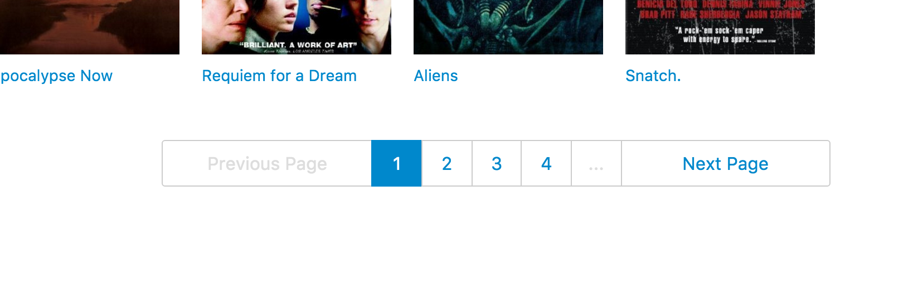
Example
import {
Pagination,
SearchkitComponent
} from "searchkit";
class App extends SearchkitComponent {
render(){
<div>
<Pagination showNumbers={true}/>
</div>
}
}
Props
translations(Object): An object of translations you wish to override. For more information on translations see translate page.showNumbers(Boolean): Display pagination page links. Defaults tofalse.showLast(Boolean): Whether to show last page (often slow in ElasticSearch ), defaults tofalseshowText(Boolean): Whether to display previous, next + dividers. Useful to switch off when using Select component. defaults totruepageScope(Number): When usingshowNumber={true}, how many page numbers to show before and after the current page number. Defaults to3mod(string): Optional. A custom BEM container class.listComponent(React Component): Used to change the rendering.
PaginationSelect
If you would like a more compact rendering, you can use Searchkit's PaginationSelect component instead
<PaginationSelect/>
Translations
pagination.previous- Previouspagination.next- Next
Refinement list
Lets the user refine the search results. You can specify if you want filters to be ORed or ANDed. For example, if you filter on a and b with OR, results with either the value a or b will match.
Example
import {
RefinementListFilter,
SearchkitComponent
} from "searchkit";
class App extends SearchkitComponent {
render(){
<div>
<RefinementListFilter id="actors" title="Actors" field="actors.raw" operator="AND"/>
</div>
}
}
Overriding Filter Option Component
If you want to tweak the markup for a refinement option, you can use the itemComponent prop and pass in a new react component to be used to render each option.
import {
Pagination,
Hits,
RefinementListFilter,
SearchkitComponent
} from "searchkit";
const RefinementOption = (props) => (
<div className={props.bemBlocks.option().state({selected:props.selected}).mix(props.bemBlocks.container("item"))} onClick={props.onClick}>
<div className={props.bemBlocks.option("text")}>{props.label}</div>
<div className={props.bemBlocks.option("count")}>{props.count}</div>
</div>
)
class App extends SearchkitComponent {
render(){
<div>
<RefinementListFilter
field="languages.raw"
title="Languages"
id="languages" itemComponent={RefinementOption}/>
</div>
}
}
Props
field(ESAttribute): Non-analysed elastic search field to create aggs for the menutitle(string): Title of the menu. Shown as a header and within selected filtersid(string): id of component. Must be unique. Used as key for url serialisationsize(number): Amount of facets to bring back, this will influence the view more functionality.operator('AND'|'OR'): If you filter on a and b with OR, results with either the value a or b will match. If you select a and b, results will show which have both a and b.translations(Object): An object of translations you wish to override. For more information on translations see translate page.itemComponent(ReactComponent): Optional. React component which overrides the default filter option component. SeeOverriding Filter Option Componentsection.listComponent(ReactComponent): Optional. Overrides the component at the list level.- Compatible with
Select,Tabs,Toggle,TagCloud,ItemList,CheckboxItemList,ItemHistogramList - Defaults to
CheckboxItemList
- Compatible with
mod(string): Optional. A custom BEM container class.orderKey(string): Order key either using an intrinsic sortable key_count_termorderDirection(string):ascordescinclude(Array|string): Terms bucket include parameter see Terms bucket filteringexclude(Array|string): Terms bucket exclude parameter, see abovefieldOptions({type:"embedded|nested|children", options:Object}) Configures the type field that is stored in ElasticSearch, can beembedded(default)nestedorchildrentype:nestedrequiresoptions.pathprovidedtype:childrenrequiresoptions.childTypeprovided- see Field Options
countFormatter((count:number)=> number|string) A optional function to format the doc countsbucketsTransform((buckets:Array)=> transformedBuckets) A optional function to transform the buckets used for the aggregation, can be used to sort the list or to inject new facets.
Translations
facets.view_more- View morefacets.view_less- View lessfacets.view_all- View all
Demo
Numeric Refinement List
Allows the user to refine results based on a numerical elasticsearch attribute. You specify an array of options for the user to select from. Will only allow the user to select one.
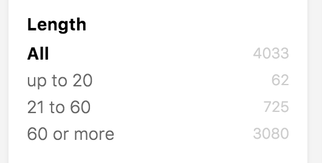
Example
import {
NumericRefinementListFilter,
SearchkitComponent
} from "searchkit";
class App extends SearchkitComponent {
render(){
<div>
<NumericRefinementListFilter id="metascore" title="Meta score" field="metaScore" options={[
{title:"All"},
{title:"up to 20", from:0, to:21},
{title:"21 to 40", from:21, to:41},
{title:"41 to 60", from:41, to:61},
{title:"61 to 80", from:61, to:81},
{title:"81 to 100", from:81, to:101}
]}/>
</div>
}
}
Props
field(ESAttribute): Non-analysed elastic search field to create aggs for the menuoptions([{title:string, from?:number, to?:number, key?:string}]): Options displayed for the user to refine results with. The key property will be used for url serialization, searchkit will generate if not provided.title(string): Title of the menu. Shown as a header and within selected filtersid(string): id of component. Must be unique. Used as key for url serialisationmod(string): Optional. A custom BEM container class.multiselect(boolean): Whether component should behave like a multiple select, defaults tofalseshowCount(boolean): Whether component should show facet counts, defaults totruelistComponent(React Component): Customize the rendering of the component at the list level- Compatible with
Select,Tabs,Toggle,TagCloud,ItemList,CheckboxItemList,ItemHistogramList - Defaults to
ItemList
- Compatible with
itemComponent(React Component): Customize each row/item rendering within the list.fieldOptions({type:"embedded|nested|children", options:Object}) Configures the type field that is stored in ElasticSearch, can beembedded(default)nestedorchildrentype:nestedrequiresoptions.pathprovidedtype:childrenrequiresoptions.childTypeprovided- see Field Options
countFormatter((count:number)=> number|string) A optional function to format the doc counts
Demo
Menu
Provides a way to navigate through results for a single attribute. Only one value can be selected at a time.
Example
import {
Pagination,
Hits,
SearchkitComponent,
MenuFilter
} from "searchkit";
class App extends SearchkitComponent {
render(){
<div>
<MenuFilter
field="languages.raw"
title="Languages"
id="languages"/>
</div>
}
}
Overriding Filter Option Component
If you want to tweak the markup for a menu option, you can use the itemComponent prop and pass in a new react component to be used to render each option.
import {
Pagination,
Hits,
SearchkitComponent,
ItemList
} from "searchkit";
class App extends React.Component {
render(){
<div>
<MenuFilter
field="languages.raw"
title="Languages"
id="languages"
listComponent={ItemList}/>
</div>
}
}
Props
field(ESAttribute): Non-analysed elastic search field to create aggs for the menutitle(string): Title of the menu. Shown as a header and within selected filtersid(string): id of component. Must be unique. Used as key for url serialisationitemComponent(ReactComponent): Optional. React component which overrides the default filter option component. SeeOverriding Filter Option Componentsection.listComponent(ReactComponent): Override the listComponent- Compatible with
Select,Tabs,Toggle,TagCloud,ItemList,CheckboxItemList,ItemHistogramList - Defaults to
ItemList
- Compatible with
mod(string): Optional. A custom BEM container class.orderKey(string): Order key either using an intrinsic sortable key_count_termorderDirection(string):ascordescinclude(Array|string): Terms bucket include parameter see Terms bucket filteringexclude(Array|string): Terms bucket exclude parameter, see abovefieldOptions({type:"embedded|nested|children", options:Object}) Configures the type field that is stored in ElasticSearch, can beembedded(default)nestedorchildrentype:nestedrequiresoptions.pathprovidedtype:childrenrequiresoptions.childTypeprovided- see Field Options
countFormatter((count:number)=> number|string) A optional function to format the doc countsbucketsTransform((buckets:Array)=> transformedBuckets) A optional function to transform the buckets used for the aggregation, can be used to sort the list or to inject new facets.
List Component examples
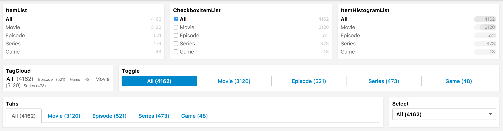
Translations
All- All
<MenuFilter
field="languages.raw"
title="Languages"
id="languages"
translations={{"All":"All languages"}}/>
Demo
Range Filter
The range filter lets users filter results within a numerical range. Provides a histogram so show the user where results are found on the range.
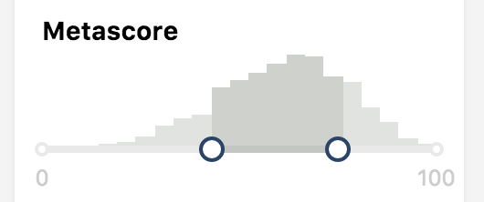
Example
import {
RangeFilter,
SearchkitComponent
} from "searchkit";
class App extends SearchkitComponent {
render(){
<div>
<RangeFilter field="metaScore" id="metascore" min={0} max={100} showHistogram={true} title="MetaScore"/>
</div>
}
}
Props
field(ESField): Required. An elasticsearch numerical field value.id(string): Required. id of component. Must be unique. Used as key for url serialisationmin(number): Required. min start rangemax(number): Required. max start rangetitle(string): Required. Title used for component and for selected filters componentshowHistogram(boolean): Shows a histogram to provide a guide where their range would hit results.rangeComponent(ReactComponent): Control which sub range component to render- Compatible with
RangeSliderHistogram,RangeSliderHistogramInput,RangeSliderInput,RangeHistogramInput - Defaults to
RangeSliderHistogram
- Compatible with
mod(string): Optional. A custom BEM container class.translations(Object): An object of translations you wish to override. For more information on translations see translate page.interval(number): Optional. Override the interval which is sent to ElasticSearch, used for generating the buckets which render the histogram. (Defaults to an interval which allows a max of 20 buckets which fit the range)fieldOptions({type:"embedded|nested|children", options:Object}) Configures the type field that is stored in ElasticSearch, can beembedded(default)nestedorchildrentype:nestedrequiresoptions.pathprovidedtype:childrenrequiresoptions.childTypeprovided- see Field Options
rangeFormatter((count:number)=> string|number) A formatter function used to convert numbers into more readable display values. E.g. long number formatting or prefixing currencies.`
Translations
range.divider- " - "
Dynamic Range Filter
The dynamic range filter lets users filter results within a numerical range. The min and max values are automatically computed by Elasticsearch using the data in the index.
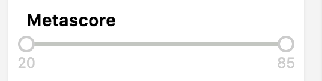
Example
import {
DynamicRangeFilter,
SearchkitComponent
} from "searchkit";
class App extends SearchkitComponent {
render(){
<div>
<DynamicRangeFilter field="metaScore" id="metascore" title="MetaScore"/>
</div>
}
}
Props
field(ESField): Required. An elasticsearch numerical field value.id(string): Required. id of component. Must be unique. Used as key for url serialisationtitle(string): Required. Title used for component and for selected filters componentrangeComponent(ReactComponent): Control which sub range component to render- Compatible with
RangeSliderInput - Defaults to
RangeSliderInput
- Compatible with
mod(string): Optional. A custom BEM container class.translations(Object): An object of translations you wish to override. For more information on translations see translate page.rangeFormatter((count:number)=> string|number) A formatter function used to convert numbers into more readable display values. E.g. long number formatting or prefixing currencies.`fieldOptions({type:"embedded|nested|children", options:Object}) Configures the type field that is stored in ElasticSearch, can beembedded(default)nestedorchildrentype:nestedrequiresoptions.pathprovidedtype:childrenrequiresoptions.childTypeprovided
Translations
range.divider- " - "
Input Filter
A input box based filter which is similar to SearchBox, but can be used multiple times, general on the left side panel.
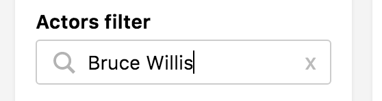
Example
import {
InputFilter,
} from "searchkit";
<InputFilter
id="author_q"
title="Actors filter"
placeholder="Search actors"
searchOnChange={true}
prefixQueryFields={["actors"]}
queryFields={["actors"]}
/>
Props
title(string): Title of the menu. Shown as a header and within selected filtersid(string): id of component. Must be unique. Used as key for url serialisationsearchOnChange(Boolean): Optional. Updates search results as you type. Will be false by default.- use with
prefixQueryFieldsto get a better search as you type behaviour.
- use with
queryBuilder(Function) builder used to create the query going to elastic.- defaults to
SimpleQueryString - Supports
QueryString, or custom function accepting(query:string, options:Object)
- defaults to
queryFields(Array) : Optional. An array of elasticsearch fields to search within. Can specify boosting on particular fields. Will search_allby default.queryOptions(Object): Optional. An object of options for Query String.placeholder(string): placeholder for the input boxprefixQueryFields(Array) : Optional. An array of elasticsearch fields to search within. Can specify boosting on particular fields. Will search_allby default. Will only be used if searchOnChange is true.prefixQueryOptions(Object): Optional. An object of options for MultiMatchQuery .mod(string): Optional. A custom BEM container class.translations(Object): An object of translations you wish to override. For more information on translations see translate page.searchThrottleTime(number): Default is 200ms. Is used whensearchOnChangeprop istrue. A search to elasticsearch will only be invoked once everysearchThrottleTimems.blurAction(search|restore): WhensearchOnChange={false}Configure behavior of the InputFtiler when the user blur's out of the field. Defaults tosearch
Translations
searchbox.placeholder- "Search"searchbox.button- "search"
Checkbox Filter
A checkbox filter component which can be used with either simple or more complicated filters to decide on/off behaviour.
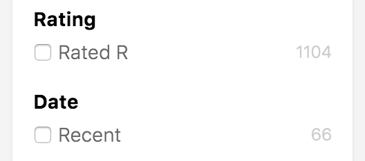
Example
import {
CheckboxFilter,
TermQuery,
BoolMust,
RangeQuery
} from "searchkit"
<CheckboxFilter id="rated-r" title="Rating" label="Rated R" filter={TermQuery("rated.raw", 'R')} />
<CheckboxFilter id="recent" title="Date" label="Recent" filter={RangeQuery("year", {gt: 2012})} />
<CheckboxFilter id="old-movies" title="Movile filter" label="Old movies" filter={
BoolMust([
RangeQuery("year", {lt: 1970}),
TermQuery("type.raw", "Movie")
])} />
Filter property
Notice how we are able to use any arbitrary ES Query, Searchkit offers out the box Query Builders as seen above, but can be any elastic filter query. See QueryDSL for other query builders.
Props
id(string): Required. id of component. Must be unique. Used as key for url serialisationtitle(string): Required. Title used for component and for selected filters componentlabel(String): Required. The label used to describe the boolean, used for the selected filters componentfilter(ES Filter object). Required. The filter used decided the on/off functionality of the checkbox.mod(string): Optional. A custom BEM container class.showCount(boolean): Optional, whether the component should render the facet count, defaults totruecontainerComponent(React component): Optional override for the container component, defaults toPanellistComponent(React component): Optional override for the list component which renders the checkbox, defaults toCheckboxItemList
TagFilter, TagFilterList, TagFilterConfig
A suite of components to provide tag filters within your search results.
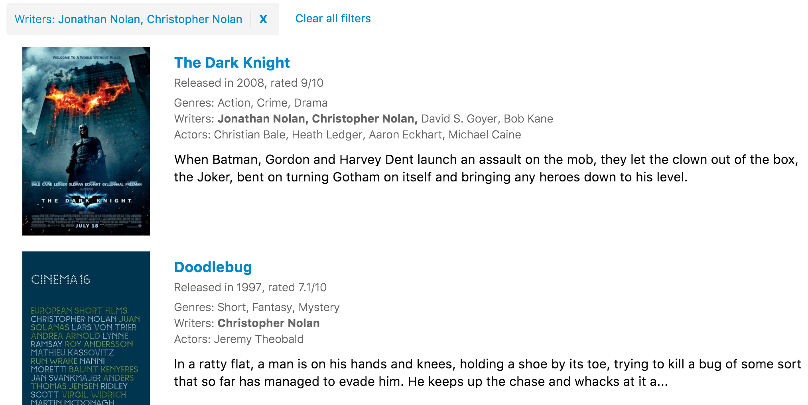
Example
Within a list item component we can use the TagFilterList and pass the values + field.
Note that a RefinementListFilter or MenuFilter or TagFilterConfig is required with provided
field so the filter can be added correctly.
jsx
<ul style={{ marginTop: 8, marginBottom: 8, listStyle: 'none', paddingLeft: 20 }}>
<li>Rating: {rated}</li>
<li>Writers: <TagFilterList field="writers.raw" values={writers} /></li>
<li>Actors: <TagFilterList field="actors.raw" values={actors} /></li>
</ul>
List Item example
const MovieHitsListItem = (props)=> {
const {bemBlocks, result} = props
let url = "http://www.imdb.com/title/" + result._source.imdbId
const { title, poster, writers = [], actors = [], genres = [], plot, released, rated } = result._source;
return (
<div className={bemBlocks.item().mix(bemBlocks.container("item"))} data-qa="hit">
<div className={bemBlocks.item("poster")}>
<img data-qa="poster" src={result._source.poster}/>
</div>
<div className={bemBlocks.item("details")}>
<a href={url} target="_blank"><h2 className={bemBlocks.item("title")}>{title}</h2></a>
<h3 className={bemBlocks.item("subtitle")}>Released in {source.year}, rated {source.imdbRating}/10</h3>
<ul style={{ marginTop: 8, marginBottom: 8, listStyle: 'none', paddingLeft: 20 }}>
<li>Rating: {rated}</li>
<li>Writers: <TagFilterList field="writers.raw" values={writers} /></li>
<li>Actors: <TagFilterList field="actors.raw" values={actors} /></li>
</ul>
</div>
</div>
)
}
const App = ()=> {
<TagFilterConfig id="genres" title="Genres" field="genres.raw" />
<RefinementListFilter id="actors" title="Actors" field="actors.raw" size={10}/>
...
<Hits hitsPerPage={12} itemComponent={MovieHitsListItem}/>
}
Note how we have a RefinementListFilter for actors.raw but needed to add a TagFilterConfig for genres.raw.
The TagFilterConfig will not render anything, and will just provide configuration for that field.
TagFilterList
TagFilterList renders a list of tags with add/remove behaviour
- filter (string): Required. The field id which should also map to the id of RefinementListFilter or MenuFilter or TagFilterConfig component within the page.
- values (Array_source of each document
TagFilter
A Low level component to render each Tag, used if you want to full control the surrounding list.
- filter (string): Required. The field id which should also map to the id of RefinementListFilter or MenuFilter or TagFilterConfig component within the page.
- value (string): The value of the tag
TagFilterConfig
A non rendering config component which holds logic to add/remove filters.
- field (string): Elastic search field to filter on
- title (string): Title of the filter, used for selected filters rendering
- id: (string): unique id used for url serialization
- operator ('AND'|'OR'): If you filter on a and b with OR, results with either the value a or b will match. If you select a and b, results will show which have both a and b.
Selected Filters
This component shows all the filters that have been applied to the current search.
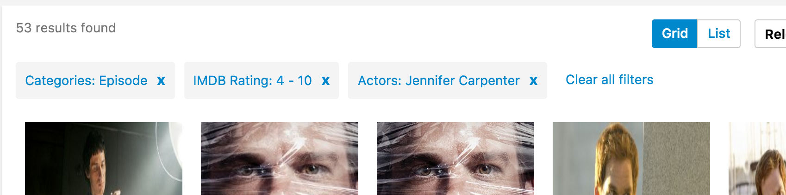
Example
import {
SelectedFilters,
SearchkitComponent
} from "searchkit";
class App extends SearchkitComponent {
render(){
<div>
<SelectedFilters/>
</div>
}
}
Overriding Selected Filter Component
If you want to tweak the markup for a selected filter item, you can use the itemComponent prop and pass in a React Component to be used instead to render each selected filter item.
import {
SelectedFilters,
SearchkitComponent
} from "searchkit";
const SelectedFilter = (props) => (
<div className={props.bemBlocks.option()
.mix(props.bemBlocks.container("item"))
.mix(`selected-filter--${props.filterId}`)()}>
<div className={props.bemBlocks.option("name")}>{props.labelKey}: {props.labelValue}</div>
<div className={props.bemBlocks.option("remove-action")} onClick={props.removeFilter}>x</div>
</div>
)
class App extends SearchkitComponent {
render(){
<div>
<SelectedFilters itemComponent={SelectedFilter} />
</div>
}
}
Props
mod(string): Optional. A custom BEM container class.itemComponent(ReactComponent): Optional. Used to override the default display of a selected filter. SeeOverriding Selected Filter Componentsection.
Grouped Selected Filters
An alternative component to SelectedFilters which groups the selected filters by Facet type and allows better use of screen real estate
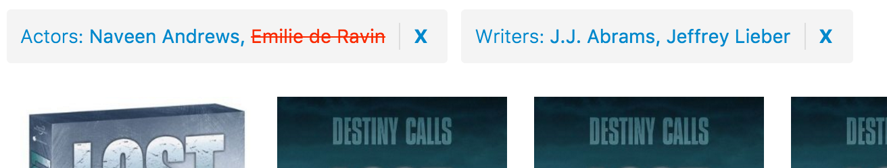
Example
import {
GroupedSelectedFilters,
Hits
} from "searchkit"
<div className="sk-layout__results sk-results-list">
<div className="sk-results-list__action-bar sk-action-bar">
<div className="sk-action-bar__filters">
<GroupedSelectedFilters/>
</div>
</div>
<Hits hitsPerPage={10}/>
</div>
GroupedSelectedFilters props
groupComponent(React Component): Used to override the rendering for each filter group.
Reset
This component clears all the selected filters and search query that are currently applied.
Example
import {
ResetFilters,
SearchkitComponent
} from "searchkit";
class App extends SearchkitComponent {
render(){
<div>
<ResetFilters/>
</div>
}
}
Overriding Display Component
If you want to tweak the markup for reset filters, you can use the component prop and pass in a React Component to be used to render the reset button.
import {
ResetFilters,
SearchkitComponent
} from "searchkit";
class ResetFiltersDisplay extends React.Component {
render(){
const {bemBlock, hasFilters, translate, resetFilters} = this.props
return (
<div onClick={resetFilters} className={bemBlock().state({disabled:!hasFilters})}>
<div className={bemBlock("reset")}>{translate("reset.clear_all")}</div>
</div>
)
}
}
class App extends SearchkitComponent {
render(){
<div>
<ResetFilters component={ResetFiltersDisplay} />
</div>
}
}
Props
translations(Object): An object of translations you wish to override. For more information on translations see translate page.component(ReactComponent): Optional. Used to override the default display of reset filters. SeeOverriding Display Componentsection.mod(string): Optional. A custom BEM container class.options(object): An object containing{query:true|false, filter:true|false, pagination:true|false}which controls which parts of the search are reset and influence the disabled state. Defaults to{query:true, filter:true, pagination:true}
Translations
reset.clear_all- Clear All Filters
Example overriding the translation
import {
ResetFilters,
SearchkitComponent
} from "searchkit";
class App extends SearchkitComponent {
render(){
<div>
<ResetFilters translations={{"reset.clear_all":"Reset all filters"}}/>
</div>
}
}
Hierarchical Menu
Component which renders a tree like structure. Used for items which have multiple levels of categorization. Used for when documents have only one hierarchical category. For documents with more than one categories, see hierarchical Refinement filter.
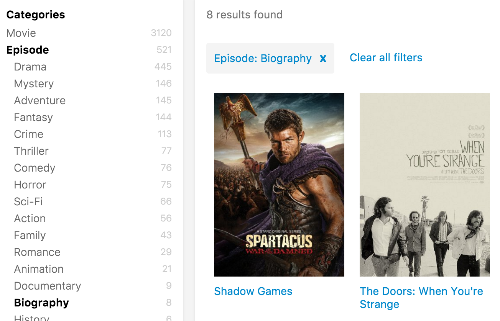
Indexing
Hierarchical Menu needs an array of level fields. Levels is derived from the order of the array. If an item was in /Appliances/Air Conditioners/Window Air Conditioners category, the setup would be as follows:
Mapping example
{
"products":{
"category":{
"properties":{
//includes all ids for flat level querying
"all":{"type":"string", "index":"not_analyzed"},
//tags bucketed by their level in the tree
"lvl1":{"type":"string", "index":"not_analyzed"},
"lvl2":{"type":"string", "index":"not_analyzed"},
"lvl3":{"type":"string", "index":"not_analyzed"},
//...
"lvl10":{"type":"string", "index":"not_analyzed"}
}
}
}
Indexing example
{
category.lvl1:"Appliances",
category.lvl2:"Air Conditioners",
category.lvl3:"Window Air Conditioners"
}
Example
import {
HierarchicalMenuFilter,
SearchkitComponent
} from "searchkit";
class App extends SearchkitComponent {
render(){
<div>
<HierarchicalMenuFilter fields={["category.lvl1", "category.lvl2", "category.lvl3"]} title="Categories" id="categories"/>
</div>
}
}
Props
fields([ESAttribute]): An array of non-analysed elastic search fields to create aggs.title(string): Title of the menu. Shown as a header and within selected filtersid(string): id of component. Must be unique. Used as key for url serialisationtranslations(Object): An object of translations you wish to override. For more information on translations see translate page.mod(string): Optional. A custom BEM container class.orderKey(string): Order key either using an intrinsic sortable key_count_termorderDirection(string):ascordesccountFormatter((count:number)=> number|string) A optional function to format the doc countssize(number): size of options shown
Demo
Hierarchical Refinement
Component which renders a tree like structure. Used for items which have multiple levels of categorization. For example product categories & folders. Difference between Hierarchical menu and Hierarchical refinement is refinement is able to handle more than one hierarchical category per document, menu can only have one.
Indexing
If a document has the following paths for the field taxonomy: /Color/Red/Firebrick /Color/Red/Orange Red /Color/Green/Sea Green /Color/Green/Lime Green
Mapping definition
Below is the definition needed for a hierarchical field, we are making hierarchical colors in this case.
js
color:{
type:"nested",
properties:{
level:{type:"integer"},
ancestors:{type:"string", index:"not_analyzed"},
value:{type:"string", index:"not_analyzed"},
order:{type:"integer"}
}
}
Indexing the data
The document field for the hierarchical color field would be:
color:[
{level:1, value:"Color", ancestors:[]},
{level:2, value:"Red", ancestors:["Color"]},
{level:3, value:"Firebrick", ancestors:["Color", "Red"]},
{level:3, value:"Orange Red", ancestors:["Color", "Red"]},
{level:2, value:"Green", ancestors:["Color"]},
{level:3, value:"Sea Green", ancestors:["Color", "Green"]},
{level:3, value:"Lime Green", ancestors:["Color", "Green"]}
]
The array must have unique values, no duplicates (Color cannot be repeated for example). Order can be passed in as an integer value. Order value is optional.
Example
import {
HierarchicalRefinementFilter,
SearchkitComponent
} from "searchkit";
class App extends SearchkitComponent {
render(){
<div>
<HierarchicalRefinementFilter field="color" title="Colors" id="colors"/>
</div>
}
}
Props
field(ESAttribute): ES Field name. See indexing section on the data required for component.title(string): Title of the menu. Shown as a header and within selected filtersid(string): id of component. Must be unique. Used as key for url serializationstartLevel(number): Optional. Can specify the root level to start from.orderKey(string): Order key either using default sortable keys_count_termor using theorderfield e.g.color.ordersize(number): Optional. Number of buckets to return. Default value is 2^31 - 1.orderDirection(string):ascordesctranslations(Object): An object of translations you wish to override. For more information on translations see translate page.mod(string): Optional. A custom BEM container class.countFormatter((count:number)=> number|string) A optional function to format the doc counts
Demo
View Switcher
Searchkit's view switcher components come in 2 seperate components. ViewSwitcherHits which toggles the hits display and ViewSwitcherToggle which is the actual toggle button to switch views.
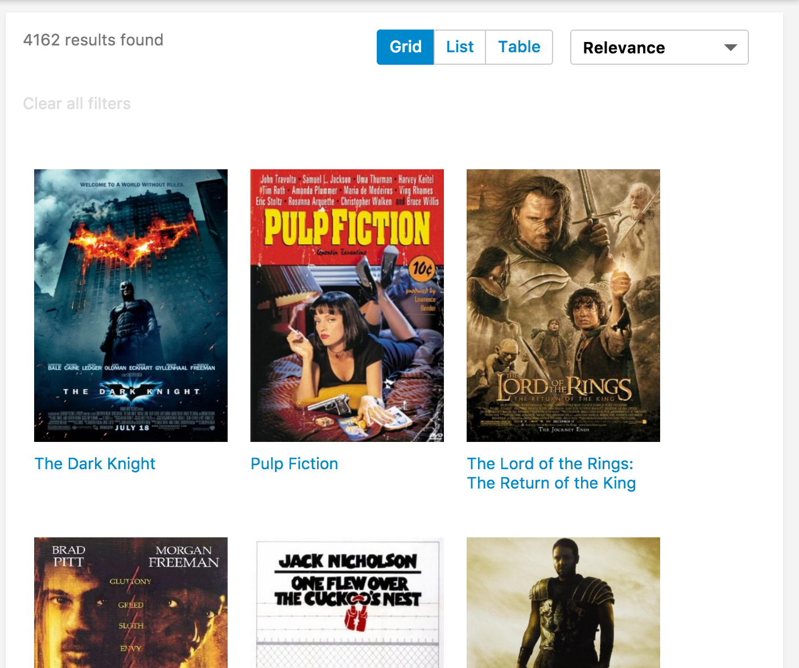 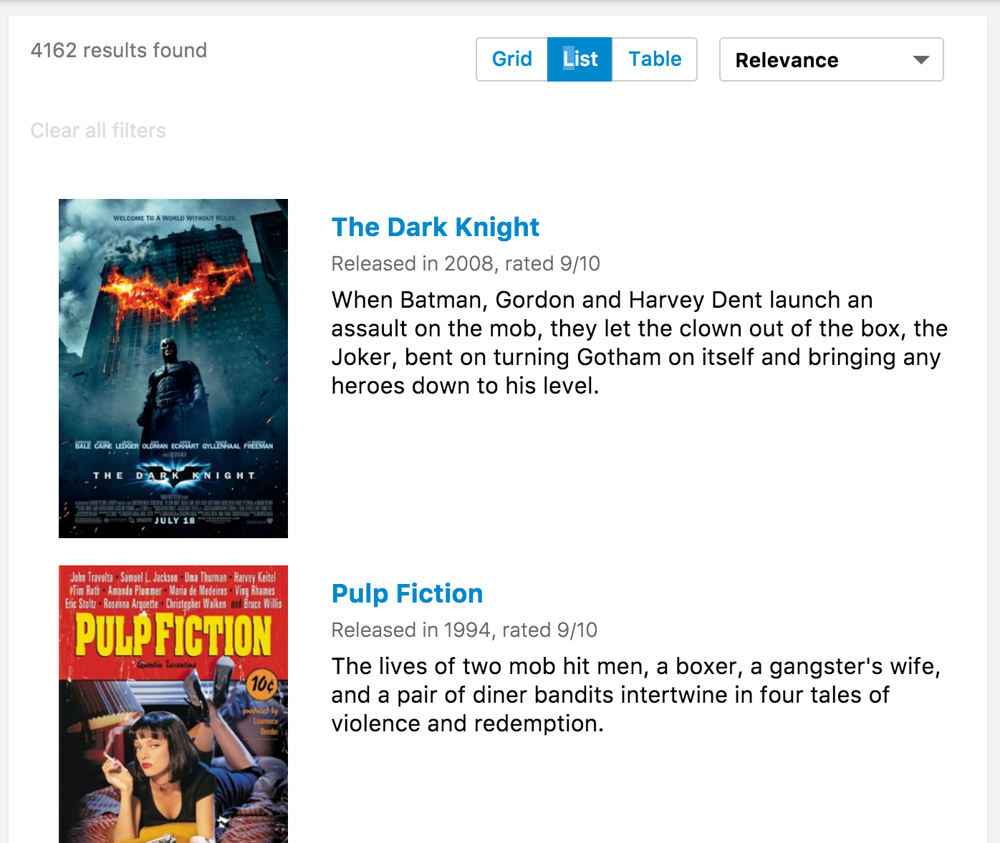 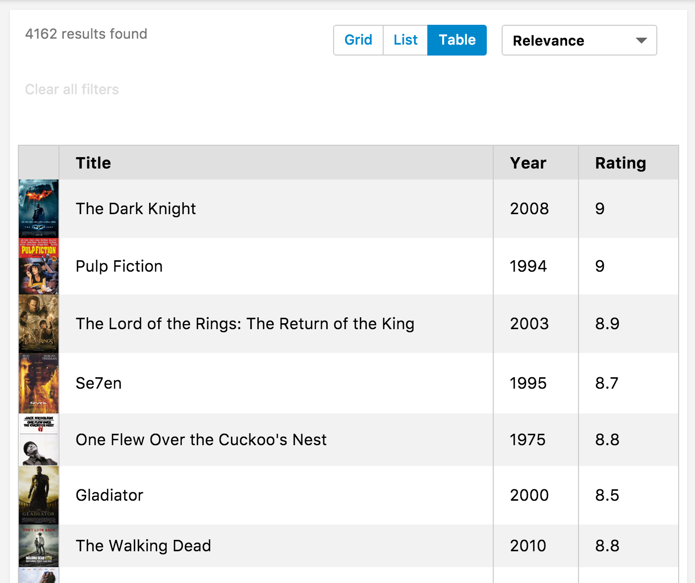
Example
import {
Hits,
ViewSwitcherHits,
ViewSwitcherToggle
} from "searchkit";
const MovieHitsGridItem = (props) => {
const {result, bemBlocks} = props
<div className={bemBlocks.item().mix(bemBlocks.container("item"))}>
<img className={bemBlocks.item("poster")} src={result._source.poster}/>
<div className={bemBlocks.item("title")}>{result._source.title}</div>
</div>
}
const MovieHitsListItem = (props)=> {
const {bemBlocks, result} = props
const source = result._source
return (
<div className={bemBlocks.item().mix(bemBlocks.container("item"))} data-qa="hit">
<div className={bemBlocks.item("poster")}>
<img data-qa="poster" src={result._source.poster}/>
</div>
<div className={bemBlocks.item("details")}>
<h2 className={bemBlocks.item("title")}>{source.title}</h2>
<h3 className={bemBlocks.item("subtitle")}>Released in {source.year}, rated {source.imdbRating}/10</h3>
</div>
</div>
)
const MovieHitsTable = (props)=> {
const { hits } = this.props
return (
<div style={{width: '100%', boxSizing: 'border-box', padding: 8}}>
<table className="sk-table sk-table-striped" style={{width: '100%', boxSizing: 'border-box'}}>
<thead>
<tr>
<th></th> <th>Title</th> <th>Year</th> <th>Rating</th>
</tr>
</thead>
<tbody>
{map(hits, hit => (
<tr key={hit._id}>
<td style={{margin: 0, padding: 0, width: 40}}>
<img data-qa="poster" src={hit._source.poster} style={{width: 40}}/>
</td>
<td>{hit._source.title}</td>
<td>{hit._source.year}</td>
<td>{hit._source.imdbRating}</td>
</tr>
))}
</tbody>
</table>
</div>
)
}
class App extends React.Component {
render(){
<div>
<ViewSwitcherToggle/>
<ViewSwitcherHits
hitsPerPage={12}
sourceFilter={["plot", "title", "poster", "imdbId", "imdbRating", "year"]}
hitComponents = {[
{key:"grid", title:"Grid", itemComponent:MovieHitsGridItem, defaultOption:true},
{key:"list", title:"List", itemComponent:MovieHitsListItem},
{key:"table", title:"Table", listComponent:MovieHitsTable}
]}
scrollTo="body"
/>
</div>
}
}
Configuration
ViewSwitcherHits accepts all the props that Hits expects with 1 additional hitComponents prop.
The hitComponents prop is an array of views, with key, title, defaultOption and itemComponent or listComponent.
hitComponents = {[
{key:"grid", title:"Grid", itemComponent:MovieHitsGridItem, defaultOption:true},
{key:"list", title:"List", itemComponent:MovieHitsListItem},
{key:"table", title:"Table", listComponent:MovieHitsTable}
]}
ViewSwitcherHits Props
hitComponents(Array<{key, title, itemComponent, listComponent, defaultOption?}>): React component used for each hit render.hitsPerPage(Number): Number of results displayed per pagehighlightFields(Array) : Array of highlighted fields. Any highlight matches will be returned in the result.highlight[fieldName]. See above for example.mod(string): Optional. A custom BEM container class.sourceFilter(string|boolean|Array) : A source filter parameter which is sent to elasticsearch to reduce the hit_sourcedata within the results. see the elastic documentation for further details.scrollTo(string|boolean): When results have changed, we scroll to the top of the element using the jQuery style selector passed in thescrollToprop. If true, it will use the body as the selector. Default value is true. If false, it will not scroll when new results are rendered. We determine a change by comparing hits_idfield with the new results.
ViewSwitcherToggle Props
listComponent(ReactComponent): Used to customize the list behavior- defaults to
Toggle, compatible withToggle,Select,Tabs
- defaults to
Page Size Selector
A component which allows to change the results per page of the search results.
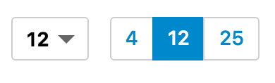
Select and Toggle examples side by side
Example
import {
Hits,
PageSizeSelector,
Select, Toggle
} from "searchkit";
const App = ()=> (
<div className="sk-layout__results sk-results-list">
<div className="sk-results-list__action-bar sk-action-bar">
<div className="sk-action-bar__info">
<PageSizeSelector options={[4,12,24]} listComponent={Toggle}/>
</div>
<Hits hitsPerPage={12}/>
</div>
</div>
)
PageSizeSelector Props
options(Array) : Array of page numbers to be shownlistComponent(ReactComponent): Used to customize the list behavior- Compatible with
Select,Tabs,Toggle,ItemList,CheckboxItemList - Defaults to
Select
- Compatible with
Sorting Selector
This component lets you reorder your results. Each option requires a sortable Elasticsearch field and the order of which you want to sort by.
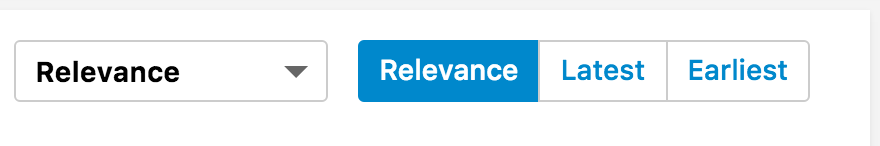
Select and Toggle example side by side.
Example
import {
SortingSelector,
SearchkitComponent
} from "searchkit";
class App extends SearchkitComponent {
render(){
<div>
<SortingSelector options={[
{label:"Relevance", field:"_score", order:"desc", defaultOption:true},
{label:"Latest Releases", field:"released", order:"desc"},
{label:"Earliest Releases", field:"released", order:"asc", key:"earliest"},
{label:"Highly Rated", key:"rating", fields: [
{field:"rating", options: {order:"desc"}},
{field:"prices", options: {order:"asc", "mode" : "avg"}}
]}
]}/>
</div>
}
}
Advanced Sorting
If you need to specify multiple sorting fields or have special options for sort field like mode, you can use the more advanced fields key (shown in example for "Highly Rated" option). This accepts an array of sort fields and allows sorting properties to be sent in the options object. Requires the key option to be specified.
Props
options([{label:string, field?:, order?:(desc|asc), defaultOption?:boolean, fields?:Object}], key?:string) : Options displayed for the user to order results with. You can usefieldsif you need to specify special options to sort, seeadvanced sortingsection.listComponent(ReactComponent) customise how the component is rendered- Compatible with
Select,Tabs,Toggle,ItemList,CheckboxItemList - Defaults to
Select
- Compatible with
Default selected
The component will look for the defaultOption field on an option and use that as the default selected. If no defaultOption is provided, the component will choose the first option as the default.
Stats
This component lets you display how many results matched the query and other metrics on the results such as how fast the search was.
Example
import {
HitsStats,
SearchkitComponent
} from "searchkit";
class App extends SearchkitComponent {
render(){
<div>
<HitsStats/>
</div>
}
}
Overriding
If you want to customise the display of HitsStats, you can override the display by passing in a ReactComponent into component prop.
import {
HitsStats,
SearchkitComponent
} from "searchkit";
const customHitStats = (props) => {
const {resultsFoundLabel, bemBlocks, hitsCount, timeTaken} = props
return (
<div className={bemBlocks.container()} data-qa="hits-stats">
<div className={bemBlocks.container("info")} data-qa="info">
I found {hitsCount} in {timeTaken}ms!
</div>
</div>
)
}
class App extends SearchkitComponent {
render(){
<div>
<HitsStats component={customHitStats}/>
</div>
}
}
Props
translations(Object): An object of translations you wish to override. For more information on translations see translate page.component(ReactComponent): A React component to override the default display component. Used when you want to change the markup of HitStatsmod(string): Optional. A custom BEM container class.countFormatter((count:number)=> number|string) A optional function to format the doc counts
Demo
Props
translations(Object): An object of translations you wish to override. For more information on translations see translate page.
Translations
hitstats.results_found- "{hitCount} results found in {timeTaken}"
Layout Components
Default set of layout components provided by Searchkit which work with Searchkit's default theme.
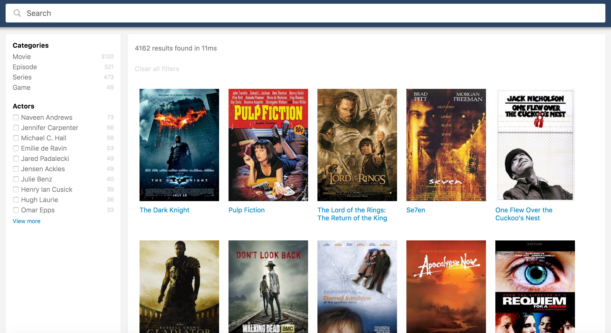
Example
<SearchkitProvider searchkit={searchkit}>
<Layout>
<TopBar>
<SearchBox
autofocus={true}
searchOnChange={true}
prefixQueryFields={["actors^1","type^2","languages","title^10"]}/>
</TopBar>
<LayoutBody>
<SideBar>
<HierarchicalMenuFilter
fields={["type.raw", "genres.raw"]}
title="Categories"
id="categories"/>
<RefinementListFilter
id="actors"
title="Actors"
field="actors.raw"
operator="AND"
size={10}/>
</SideBar>
<LayoutResults>
<ActionBar>
<ActionBarRow>
<HitsStats/>
</ActionBarRow>
<ActionBarRow>
<SelectedFilters/>
<ResetFilters/>
</ActionBarRow>
</ActionBar>
<Hits mod="sk-hits-grid" hitsPerPage={10} itemComponent={MovieHitsGridItem}
sourceFilter={["title", "poster", "imdbId"]}/>
<NoHits/>
</LayoutResults>
</LayoutBody>
</Layout>
</SearchkitProvider>
Panel
This is a titled Panel component which can be collapsed, it is the default containerComponent used by our filter components
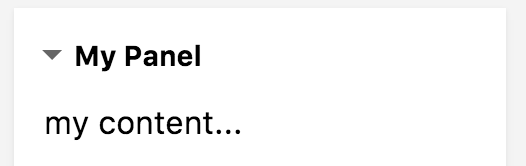
import {Panel} from "searchkit"
const PanelExample ()=> (
<Panel title="My Panel" collapsable={true} defaultCollapsed={false}>
<p>my content...</p>
</Panel>
)
Props
title(string) - the title of the panelcollapsable(boolean) - Whether the panel can be collapsed (defaults to false)defaultCollapsed(boolean) - Whether the panel can be collapsed (defaults to true when collapsable = true)
Making a filter component collapsable
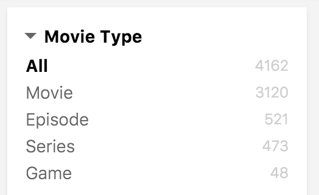
<MenuFilter field="type.raw" size={10}
title="Movie Type" id="types"
containerComponent={<Panel collapsable={true} defaultCollapsed={false}/>}/>
/>
Using an action bar component in a panel
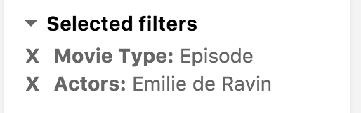
<Panel title="Selected filters" collapsable={true} defaultCollapsed={false}>
<GroupedSelectedFilters/>
</Panel>
List Components
A Suite of UI Components which render lists in various ways and can be passed to many Searchkit components to change their list appearance.
Many of SearchKit's components which render lists will support a listComponent prop where these components an be referenced
ItemList
Used to render list of facets or items
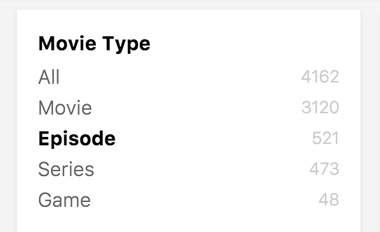
ItemCheckboxList
Used to render list of facets or items when multiselecting
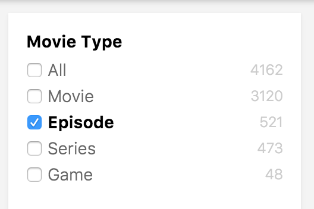
ItemHistogramList
Used to render list of facets or items with a histogram bar showing the count. Requires a doc_count for each item, so won't work for Pagination, SortingSelector, and other non-filter components.
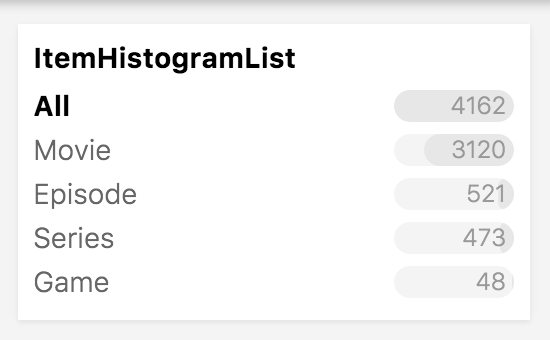
TagCloud
Used to render list of facets or items where the count influences the size of text. Requires a doc_count for each item, so won't work for Pagination, SortingSelector, and other non-filter components.
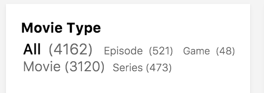
Tabs
Used to render tabs, often used for menu or view switching
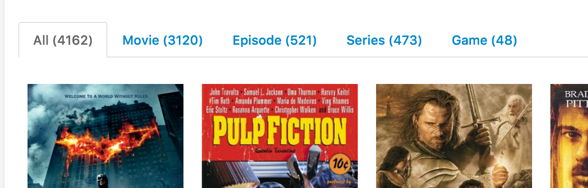
Select
Used to render a selectable list of items
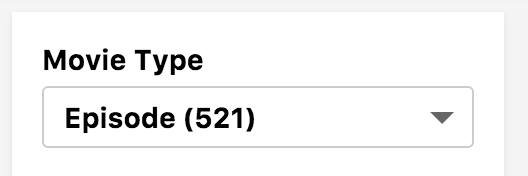
Toggle
Renders a toggle with single/multiple select behaviour
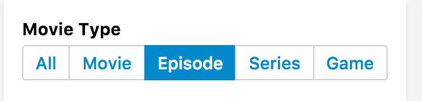
Compatible parent components
RefinementListFilter
ItemList, ItemCheckboxList, ItemHistogramList, TagCloud, Tabs, Select, Toggle
MenuFilter
ItemList, ItemCheckboxList, ItemHistogramList, TagCloud, Tabs, Select, Toggle
NumericRefinementListFilter
ItemList, ItemCheckboxList, ItemHistogramList, TagCloud, Tabs, Select, Toggle
ViewSwitcherToggle
ItemList, ItemCheckboxList, Tabs, Select, Toggle
PageSizeSelector
ItemList, ItemCheckboxList, Tabs, Select, Toggle
SortingSelector
ItemList, ItemCheckboxList, Tabs, Select, Toggle
Pagination
ItemList, ItemCheckboxList, Tabs, Select, Toggle
Range Components
A Suite of UI Components which render ranges in various ways and can be passed to some Searchkit components to change their range appearance.
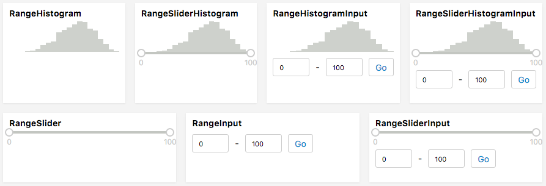
Currently works for RangeFilter using the rangeComponent prop
RangeSliderHistogram
RangeFilter's default style
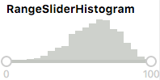
RangeSliderHistogramInput
Full-featured range component with a slider, histogram, and input. All other current range components are slimmed-down versions of this one.
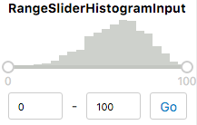
RangeInput
Range component containing only min/max input fields. Requires pressing "Go" to update the filter.
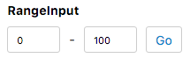
RangeSlider
Simple slider, using rc-slider. Updates the filter when the handle is released.
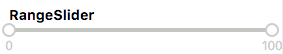
RangeHistogram
Renders a histogram with no filtering possibilities.
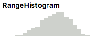
RangeSliderInput
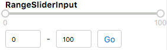
RangeHistogramInput
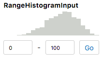
Compatible parent components
RangeFilter
Works with all range components
Theming
Searchkit provides out of the box css and theme to make it easier for developers to use Searchkit and also offers flexibility in implementing your own styles to customising the components display via display components.
Using Searchkit's Theme
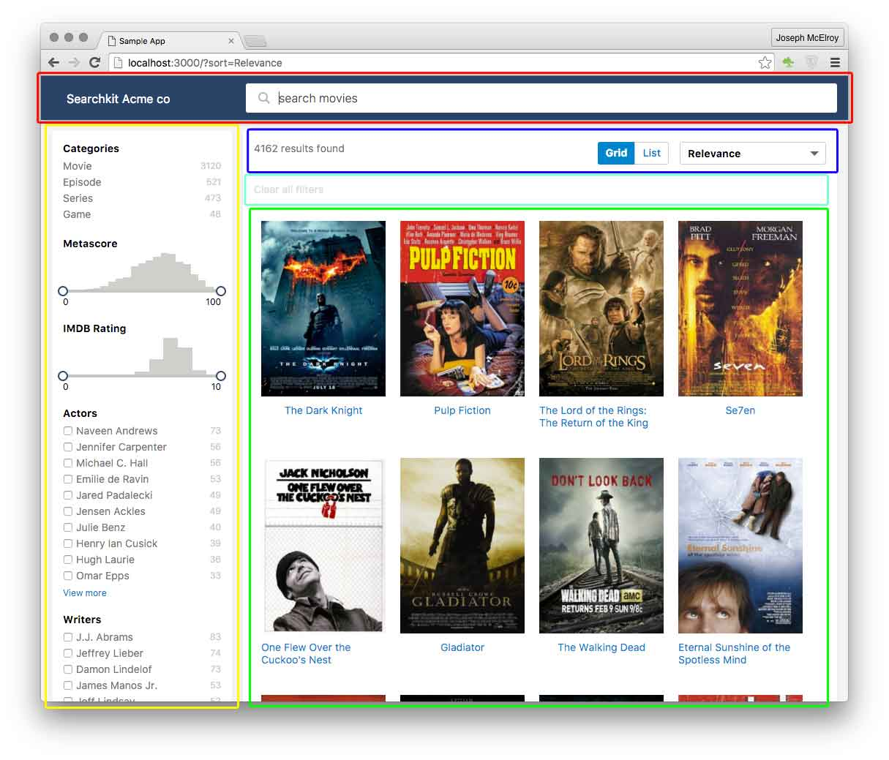
We provide an out of the box theme to get developers started quickly.
Getting Started
To use Searchkit's theme, add the theme.css file onto your site. You can use either the CDN link or the theme.css file in searchkit's release folder. If using the CDN link, please change the version number which matches your Searchkit version.
<link rel="stylesheet" type="text/css" href="https://cdn.jsdelivr.net/searchkit/2.0.0/theme.css">
Layout Areas
// layout components
import {
Layout, TopBar, LayoutBody, LayoutResults,
ActionBar, ActionBarRow, SideBar
} from "searchkit"
<Layout>
<TopBar>
// red area
<SearchBox .../>
</TopBar>
<LayoutBody>
<SideBar>
// yellow area
<HierarchicalMenuFilter .../>
<RefinementListFilter .../>
</SideBar>
<LayoutResults>
<ActionBar>
<ActionBarRow>
// blue area
<HitsStats .../>
<ViewSwitcherToggle/>
<SortingSelector .../>
</ActionBarRow>
<ActionBarRow>
// aqua area
<SelectedFilters/>
<ResetFilters/>
</ActionBarRow>
</ActionBar>
// green area
<Hits ../>
<Pagination .../>
</LayoutResults>
</LayoutBody>
</Layout>
When you include searchkit's theme.css, we provide you a basic layout.
Layout Max width
You can control the max-width of the layout by adding size prop to the layout component.
<layout size="m">: max-width of 960px<layout size="l">: max-width of 1280px
If no size class is applied, layout will use the full width of the browser.
Grid / List Hit Items
We provide out of the box styles for Hit items for Grid and List Views. See ViewSwitcherHits component.
Example
const MovieHitsGridItem = (props)=> {
const {bemBlocks, result} = props
let url = "http://www.imdb.com/title/" + result._source.imdbId
const source:any = _.extend({}, result._source, result.highlight)
return (
<div className={bemBlocks.item().mix(bemBlocks.container("item"))} data-qa="hit">
<a href={url} target="_blank">
// red area
<img data-qa="poster" className={bemBlocks.item("poster")} src={source.poster} width="170" height="240"/>
// green area
<div data-qa="title" className={bemBlocks.item("title")} dangerouslySetInnerHTML={{__html:source.title}}>
</div>
</a>
</div>
)
}
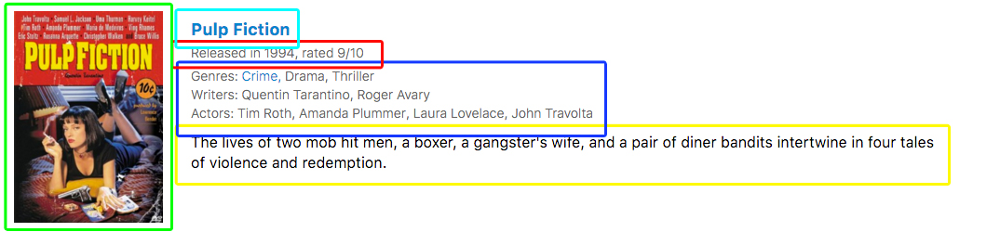
const MovieHitsListItem = (props)=> {
const {bemBlocks, result} = props
let url = "http://www.imdb.com/title/" + result._source.imdbId
const source:any = _.extend({}, result._source, result.highlight)
return (
<div className={bemBlocks.item().mix(bemBlocks.container("item"))} data-qa="hit">
<div className={bemBlocks.item("poster")}>
// green area
<img data-qa="poster" src={result._source.poster}/>
</div>
<div className={bemBlocks.item("details")}>
// aqua area
<a href={url} target="_blank"><h2 className={bemBlocks.item("title")} dangerouslySetInnerHTML={{__html:source.title}}></h2></a>
// red area
<h3 className={bemBlocks.item("subtitle")}>Released in {source.year}, rated {source.imdbRating}/10</h3>
// blue area
<ul className={bemBlocks.item("tags")}>
<li>Genres: <TagFilterList field="genres.raw" values={genres} /></li>
<li>Writers: <TagFilterList field="writers.raw" values={writers} /></li>
<li>Actors: <TagFilterList field="actors.raw" values={actors} /></li>
</ul>
// yellow area
<div className={bemBlocks.item("text")} dangerouslySetInnerHTML={{__html:source.plot}}></div>
</div>
</div>
)
}
and to use these display components, use the ViewSwitcherHits component to switch between views.
<ViewSwitcherHits
hitsPerPage={12} highlightFields={["title","plot"]}
sourceFilter={["plot", "title", "poster", "imdbId", "imdbRating", "year"]}
hitComponents = {[
{key:"grid", title:"Grid", itemComponent:MovieHitsGridItem, defaultOption:true},
{key:"list", title:"List", itemComponent:MovieHitsListItem}
]}
scrollTo="body"
/>
Using one view type
If you only want to use the grid view or list view, you need to specify on the hits component, the mod prop to be either sk-hits-list for list components or sk-hits-grid for grid components.
<Hits hitsPerPage={10} mod="sk-hits-list" itemComponent={ExampleHitsItem}/>
Extending Theme
You want to use the layout but want to adjust the colors, fonts to suit your app. Searchkit's Theming uses a set of default SCSS variables.
You can override the defaults by importing theme.scss into your own project and overriding the variables.
Example in webpack sass loader
$sk-action-text-color: red;
@import "~searchkit/theming/theme.scss";
Using Your Own Styles
If you want to take control of the component's styling to suit your app, you have a number of options.
Component's mod container
Most components support a mod prop which allows you to change the component's BEM block element. Useful for when you want one particular component to be styled different. See component API docs.
Overriding markup
Most components support overriding display components via the component, listComponent or itemComponent props. See component API docs.
Core
Searchkit Architecture
ElasticSearch's querying is very sophisticated and modelling relationship between query, components, results and url required a certain core architecture.
Searchkit's core classes
- SearchkitManager as a top level class to manage searchkit
- Accessor An accessor manages state, maps to a url key and produces a part of an ElasticSearch query
- SearchkitComponent is the main react baseclass which ties the
SearcherandAccessorto the UI. - ImmutableQuery A query object which is passed top down, the query is rebuilt on every search and accessors take care of returning a query based on its state. Note: The query object is immutable as it removes defensive code related to worrying about internal change. It also allows comparison with previous queries when deciding when to search.
graph LR
SearchkitManager-->|has many|Accessor
SearchkitComponent-->|has many|Accessor
SearchkitManager
SearchkitManager is the top level class which manages a Searchkit application
Example Usage
import {
SearchkitManager
} from "searchkit"
const host = "/"
// const host = "http//localhost:9200/movies"
const searchkit = new SearchkitManager(host, {
httpHeaders:{},
basicAuth:"key:val"
})
Options
host - A mandatory host will either be a path to a direct instance of elasticsearch with cors enabled, or can be relative to the domain the application is served on, which usually is a thin proxy to an elasticsearch server. A node implementation can be found here SearchkitExpress
httpHeaders - A key value object containing headers to sent along with each http request
basicAuth - A string containing "key:val" for authenticating on each request, useful if using cloud providers such as searchly.com
withCredentials - A boolean to pass to Axios to indicate whether or not cross-site Access-Control requests should be made using credentials
searchOnLoad - A boolean to search on load, defaults to
trueuseHistory - A boolean to enable url history support, defaults to
truecreateHistory - A function which returns an instance of a history obj, defaults to
createBrowserHistory from history@4.6.1getLocation - A function which returns the current location which has to implement the LocationInterface {pathname:String,search:String}, defaults to
()=> window.locationsearchUrlPath - A the search endpoint name, defaults to
/_search. Used if your server proxy endpoint needs a different url convention.timeout - A number value to override the default 5000ms response timeout. Optional.
defaultSize - Default size for elastic results, defaults to
20
Default Queries
Sometimes we need to apply a default query which affects the entire search and is not serialized to the browser url.
SearchkitManager allows ability to add these
import {
SearchkitManager,
TermQuery,
FilteredQuery,
BoolShould
} from "searchkit"
const searchkit = new SearchkitManager("/")
searchkit.addDefaultQuery((query)=> {
return query.addQuery(FilteredQuery({
filter:BoolShould([
TermQuery("colour", "red"),
TermQuery("colour", "orange")
])
}))
})
reloadSearch
If you want to reload the search even with query and state hasn't changed
typescript
searchkit.reloadSearch()
Query Processor
Searchkit offers ability to mutate the query just before its sent to ElasticSearch, this is so we can always support new apis for ElasticSearch and any custom logic you wish to add that is low level in searchkit normally.
searchkit.setQueryProcessor((plainQueryObject)=>{
plainQueryObject.source = false
return plainQueryObject
})
Note We only support 1 queryProcessor function currently, so multiple
setQueryProcessorcalls will override each other.
resultsListener
If you want to be notified when results changed ```typescript let removalFn = searchkit.addResultsListener((results)=>{ //do something with results })
//removalFn() if you want to stop listening ```
shouldPerformSearch
If you want to control whether Searchkit performs a search, you can provide a custom check function
The shouldPerformSearch function is called with an instance of ImmutableQuery
typescript
//only search when there is a query string
this.searchkit.shouldPerformSearch = (query)=> {
return !!query.getQueryString()
}
Accessors
Accessors are used to manage state and produce a fragment of an ElasticSearch query. This seperates all the query + state logic away from Searchkit Components. Accessors also hold a key which is used to serialize/deserialize to the browser url. Searchkit manages this complexity in the background for you.
Example usage
let accessor = new PaginationAccessor("p")
accessor.state = accessor.state.setValue(5)
//...when searching
// url serializes to ?p=5
// from field gets added to Elastic Query
List of some of Searchkit's existing accessors
- FacetAccessor
- HierarchicalFacetAccessor
- NumericOptionsAccessor
- PageSizeAccessor
- PaginationAccessor
- QueryAccessor
- SortingAccessor
ImmutableQuery
An immutable query builder which is passed around particular Accessors before being sent to ElasticSearch. This is used internally by Searchkit components
Example usage
import {
ImmutableQuery,
SimpleQueryString
} from "searchkit"
let query = new ImmutableQuery()
let newQuery = query.setSize(10).addQuery(
SimpleQueryString("search term")
)
//query + newQuery are seperate
API
.addQuery(queryObject)js //simple query new ImmutableQuery().addQuery(SimpleQueryString("Hello"))js //simple query + prefix queries on title(boosted) + description new ImmutableQuery().addQuery(BoolMust([ SimpleQueryString("Termina"), MatchPhrasePrefix("Termina", "movieTitle^5") MatchPhrasePrefix("Termina", "movieDescription") ]).addFilter(key, boolObject)js //filter on either color of red or yellow new ImmutableQuery().addFilter("color", BoolShould([ Term("color", "red"), Term("color", "yellow") ])).addAnonymousFilter(key, boolObject)js //filter on either color of red or yellow new ImmutableQuery().addAnonymousFilter(BoolShould([ Term("color", "red"), Term("color", "yellow") ])).setSize(size)js new ImmutableQuery().setSize(10).getSize()js query.getSize().setFrom(from)js new ImmutableQuery().setFrom(100).getFrom()js query.getFrom().getPage()js query.getPage().setSort(sortOb)js new ImmutableQuery().setSort([ {"price" : {"order" : "asc"}} ]).setSource(sourceFilter)js new ImmutableQuery().setSource(["title", "thumbnail"])
FieldOptions
Searchkit allows customizing certain components for use with nested or children fields
Supported components
- RefinementListFilter
- MenuFilter
- RangeFilter
- NumericRefinementListFilter
- DynamicRangeFilter
Nested Example
<RefinementListFilter
id="embeddedTags"
title= "Embedded Tags"
field='tags.name'
fieldOptions={{type:'nested', options:{path:'tags'}}}/>
fieldOptions.options (type='nested')
pathmandatory path needed by elasticscore_modeoptionalinner_hitsoptional
Children Example
<RefinementListFilter
id="childrenTags"
title= "Children Tags"
field='name'
fieldOptions={{type:'children', options:{childType:'tags'}}}/>
fieldOptions.options (type='children')
childTypemandatory childType needed by elasticscore_modeoptionalinner_hitsoptionalmin_childrenoptionalmax_childrenoptional
Query DSL builders
Searchkit ships with many query builders to be used internally and externally to searchkit. This is to remove boilerplate and errors when constructing complicated elastic queries.
Term based queries
TermQuery(field, value)
import {TermQuery} from "searchkit"
TermQuery("color", "red")
TermsQuery(field, values)
import {TermsQuery} from "searchkit"
TermsQuery("color", ["red", "orange"])
ExistsQuery(field)
import {ExistsQuery} from "searchkit"
ExistsQuery("color")
RangeQuery(field, options)
Available options: lt, lte, gt, gte, boost, format, time_zone
Numeric Range:
import {RangeQuery} from "searchkit"
RangeQuery("rating", {gte: 1, lt: 11 })
/* {
range:{
rating: { gte:1, lt:11 }
}
} */
Date Range:
import {RangeQuery} from "searchkit"
RangeQuery("date_received", { gte: "2005||/y" })
/* {
range: {
date_received: { gte: "2005||/y" }
}
} */
Compound queries
BoolMust(filter)
import {BoolMust, TermQuery} from "searchkit"
//array
BoolMust([
Term("color", "orange"),
Term("brand", "boss")
])
//single filter
BoolMust(Term("color", "red"))
BoolMustNot(filter)
See BoolMust
BoolShould(filter)
See BoolMust
FilteredQuery(filteredOb)
import {FilteredQuery, MatchQuery, TermQuery} from "searchkit"
FilteredQuery({
query:MatchQuery("title", "Star Wars"),
filter:TermQuery("genre", "Action")
})
Full text based queries
MatchQuery(field, query, options)
import {MatchQuery} from "searchkit"
MatchQuery("color", "red yellow", {
operator:'AND'
//...other match query options
})
MatchPhrasePrefix(query, str)
import {MatchPhrasePrefix} from "searchkit"
MatchPhrasePrefix('title', 'spide')
//with optional boost
MatchPhrasePrefix('title^10', 'spide')
MultiMatchQuery(query, options)
import {MultiMatchQuery} from "searchkit"
MultiMatchQuery("red", {
fields:["color", "song_title"],
operator:"OR"
//.. other multi match query options
})
SimpleQueryString(query, options)
import {SimpleQueryString} from "searchkit"
SimpleQueryString("red AND blue", {
fields:["color", "song_title"],
operator:"OR"
//.. other simple query options
})
SearchkitProvider
A react component to provide a SearchkitManager instance to all descendant react components
Usage
import {
SearchkitManager,
SearchkitProvider
} from "searchkit"
const searchkit = new SearchkitManager("/")
const App = ()=> (
<SearchkitProvider searchkit={searchkit}>
//... app with searchkit components
</SearchkitProvider>
)
ReactDOM.render(<App/>, document.getElementById("app"))
Note
SearchkitProviderwill add theSearchkitManagerto the context and is automatically read by components extending SearchkitComponent
SearchkitComponent
A react component baseclass which offers convenience methods and references to instances of SearchkitManager and Searcher
import {
SearchkitComponent
} from "searchkit"
class MySearchkitComponent extends SearchkitComponent {
//optional overridable methods
// uses bem-cn library
// this.bemBlocks.container() -> "container"
// this.bemBlocks.option().mix(this.bemBlocks.container("item")) -> "option container__item"
defineBEMBlocks(){
return {
"container":"container",
"option":"item"
}
}
defineAccessor(){
//return a configured Accessor
}
}
Translate
All components run a translate function on any text displayed. This includes:
- filter options (for when options are ids and required to be rendered in text)
- previous / next navigation
- show more / show less / show all action text
- search placeholder
and many more in components.
Interpolations
Some translations contain interpolations, E.g. NoHits.NoResultsFound which has a default translation of No results found for {query}. which means the component will provide the query value.
How to override global defaults
const searchkit = new SearchkitManager("locahost:9200")
searchkit.translateFunction = (key) => {
let translations = {
"pagination.previous":"Previous page",
"pagination.next":"Next page",
"id1":"Color",
"id2": "Red"
}
return translations[key]
}
Override component defaults
You can pass any component an object of translations you wish to override. Example below:
<SearchBox translations={{"searchbox.placeholder":"search movies"}} autofocus={true} searchOnChange={true} queryFields={["actors^1","type^2","languages","title^5", "genres^2"]}/>
List of some of the translation overrides with their defaults
ResetFilters
reset.clear_all- Clear All Filters
RefinementListFilter
facets.view_more- View morefacets.view_less- View lessfacets.view_all- View all
NoHits
NoHits.NoResultsFound- No results found for {query}.NoHits.DidYouMean- Search for {suggestion}.NoHits.SearchWithoutFilters- Search for {query} without filtersNoHits.NoResultsFoundDidYouMean:No results found for {query}. Did you mean {suggestion}?
HitStats
hitstats.results_found- {hitCount} results found in {timeTaken}ms
Pagination
pagination.previous- Previouspagination.next- Next
Searchbox
searchbox.placeholder- "Search"
Migrating
Migrating from Searchkit 0.2.0
Removed config + classes
multipleSearchers removed
import {SearchkitManager} from "searchkit"
new SearchkitManager("/", {multipleSearchers:false}
//becomes
new SearchkitManager("/")
Searcher + SearcherProvider removed
import {
Searcher,
SearcherProvider,
SearchkitManager,
SearchkitProvider
} from "searchkit"
//becomes
import {
SearchkitManager,
SearchkitProvider
} from "searchkit"
Hits component no longer renders blank state
We have moved the no results found text + ui into a new NoHits Component
```jsx
//0.2
//0.3.x
Migrating from Searchkit 0.3.x
Searchkit now uses lodash 4.0
The api is identical, but if you get terminal errors during development you might need to do a clean npm install.
RangeQuery api changed
import {RangeQuery} from "searchkit"
//before
RangeQuery("price", 10, 21)
//after
RangeQuery("price", {
gte:10, lt:21
})
The new RangeQuery api now allows the following options
typescript
export interface RangeQueryOptions {
lt?:number
lte?:number
gt?:number
gte?:number
boost?:number
format?:string
time_zone?:string
}
Migrating from Searchkit 0.4.x
Overriding Display Components
Rather than extending a component class and overriding particular methods responsible for rendering, you now use the itemComponent or component prop and pass in a React component to do the rendering. The following components now support this feature:
- Hits
- InitialLoader
- Menu
- Refinement List
- Reset
- Selected Filters
Not all components support this feature yet but will expand in future releases. Let us know via github issues if there is one in particular you need.
Hits component no longer renders initial state
We have moved the initial loading view into a new Initial loader Component
Migrating from Searchkit 0.5.x
Hits sourceFilter property
Hits now supports the sourceFilter prop, we strongly advise you to use this as it will speed up your search and reduce a lot of wasted bandwidth.
jsx
<Hits hitsPerPage={50} sourceFilter={["title", "poster", "imdbId"]} itemComponent={HitItem}/>
HitStats component overrides
If you previously extended HitStats in order to customize the component, please switch to using the component prop.
More details can be found in the HitStats documentation
Migrating from Searchkit 0.6.x
Styles & Theming
In 0.7, we revisited the way developers use our default styles. We now ship a supported layout and grid / list views. See theming section for more information
sk- prefix Classnames
In 0.7, we have prefixed all searchkit's classnames with sk- to prevent potential collisions with your own styles.
No more styles.css
We ship with only one css file, theme.css. This includes all component styles and basic searchkit layout.
Retain grid styling
Hits component requires mod="sk-hits-grid" to retain grid styling
Examples + Docs
Migrating from Searchkit 0.7.x
Styles & Theming
Some of Searchkit's internal classNames have changed, if you use the default Searchkit theme then no changes should be required, however custom css targeting certain elements may need to reviewed.
List Components
Many of Searchkit's components now support the listComponent property, so if you have extended components previously it might be worth checking if there is a simply way now using our out the box List Components or making your own.
RefinementListFilter, MenuFilter itemComponent changes
If you have implemented a custom itemComponent, the toggleFilter action function has been renamed to onClick, be sure to rename so that clicking facets works as expected.
Hits List Component
If you have needed to extend Hits internals to do views such as Table views, checkout the Hits docs as we now provide a simpler way to do these customizations.
Migrating from Searchkit 0.8.x
Breaking changes
Action bar classes renamed
sk-action-bar__info + sk-action-bar__filter renamed to sk-action-bar-row.
We strongly recommend using Searchkit's new layout components, see more below.
Notable Changes
Layout components
Brand new layout components, rather than using div's with specific classNames, we now provide out the box layout components which will work towards responsive layout in future versions. We strongly encourage you all to use these new layout components.
Layout,TopBar,LayoutBody,SideBar,LayoutResults,ActionBar,ActionBarRow- see Layout example
- see Theming guide
- New CheckboxFilter
- New InputFilter
- New DynamicRangeFilter
- New TagFilter components
SortSelectorsupports multiple sort fieldsSearchkitManagerhas newreloadSearchmethodSearchBoxandInputFiltersupport newqueryBuilderandprefixQueryOptionsprops
- New CheckboxFilter
Migrating from Searchkit 0.9.x
upgrade to history 2.x.x
We have upgraded internally our history library, which works with latest react-router. There shouldn't be any breaking changes, but keep a lookout in this area.
Serverside Guide
Using Express
Searchkit ships with an express plugin to proxy api calls to ElasticSearch
Note The use of a proxy is optional, you can configure the
Searchkitclient to connect directly to anElasticSearchserver
Installation
npm install searchkit-express --save
SearchkitExpress = require("searchkit-express")
var app = express()
//...
SearchkitExpress({
host:process.env.ELASTIC_URL || "http://localhost:9200",
index:'movies',
queryProcessor:function(query, req, res){
//do neccessery permissions, prefilters to query object
//then return it
return query
}
}, app)
This will add the following endpoints to your root url which will route to the movies index on your elasticsearch instance
* POST /_search
Custom router
If you wish to prefix the url or control the middleware for these particular routes SearchkitExpress allows manual creation of an express.Router
var app = express()
//...
var searchkitRouter = SearchkitExpress.createRouter({
host:process.env.ELASTIC_URL || "http://localhost:9200",
index:'movies',
queryProcessor:function(query, req, res){
console.log(query)
return query
}
})
app.use("/movie-search", searchkitRouter)
This will result in the following api endpoints
POST /movie-search/_search
Indexing & Mapping Guide
Elasticsearch querying is very sophisticated, and many of the features rely on an appropriate mapping configured.
Updating index
Straightforward to update the index. See Updating indices.
Analyzer extensions
Out the box, elasticsearch uses the default standard analyzer. We extend the default analyzer to offer word delimiter, html strip and char mapping.
{
"analysis": {
"char_filter": {
"replace": {
"type": "mapping",
"mappings": [
"&=> and "
]
}
},
"filter": {
"word_delimiter" : {
"type" : "word_delimiter",
"split_on_numerics" : false,
"split_on_case_change" : true,
"generate_word_parts" : true,
"generate_number_parts" : true,
"catenate_all" : true,
"preserve_original":true,
"catenate_numbers":true
}
},
"analyzer": {
"default": {
"type": "custom",
"char_filter": [
"html_strip",
"replace"
],
"tokenizer": "whitespace",
"filter": [
"lowercase",
"word_delimiter"
]
}
}
}
}
Searchkit Mapping best practices
Indexing fields for filtering & searching
Often you will want a field to be both searchable and appear as filters. A field will need to be indexed in 2 ways to achieve this, and we can make use of multi fields
Mapping example
{
"movie" : {
"properties" : {
"genres" : {
"type" : "string",
"fields" : {
"raw" : {
"type" : "string",
"index" : "not_analyzed"
}
}
}
}
}
}
This mapping will mean the genres field is indexed in 2 ways. The genres path will be analyzed by elastic search meaning it will be tokenized and have the standard stop words removed which is ideal for a free text search.
The genres.raw path will be left untouched by Elasticsearch, Searchkit would use not_analyzed paths to power aggregated search components.
Component examples
Using the genres.raw field
jsx
<RefinementListFilter id="genres" title="Genres" field="genres.raw" operator="AND"/>
Using the field for searching using prefix
jsx
<SearchBox prefixQueryFields={["genres^1", "name^10"]}/>
Developer Guide
setup
- checkout project on the
developbranch yarnto install dependencies
Developing
npm run test:watchto run searchkit's testsnpm run test:serveto serve the test apps onlocalhost:4000. The Apps are intest/e2e/server/appsfolder. Any updates to src are immediately reflected in the test apps.npm run buildto build thelibfolder (es5) and standalone release.
Running E2Es
experimental npm run test:e2e-standalone to run e2es. Requires protractor v4 to be installed globally (npm i -g protractor ) and selenium webdriver to be running.